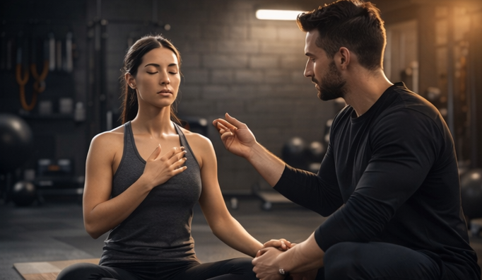
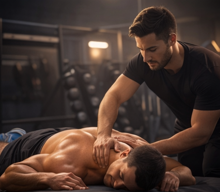

RECUPERACIÓN

Movilidad
El entrenamiento de movilidad se enfoca en mejorar la capacidad del cuerpo para moverse con libertad, control y sin restricciones articulares. A diferencia del estiramiento tradicional, que solo busca alargar los músculos, la movilidad trabaja tanto la flexibilidad como la fuerza activa en todo el rango de movimiento.
- Previene lesiones al mejorar el control corporal y reducir tensiones articulares.
- Aumenta el rendimiento en entrenamientos de fuerza, funcionales o deportivos.
- Mejora la postura, la coordinación y la eficiencia del movimiento diario.
- Reduce dolores por rigidez muscular o inactividad prolongada (como en trabajos de oficina).

Breathing
Las técnicas de respiración son métodos conscientes para controlar el ritmo, la profundidad y la frecuencia de la respiración. Aunque respirar es automático, aprender a respirar correctamente mejora el rendimiento físico, reduce el estrés y optimiza la recuperación.
- Mejoran el rendimiento deportivo, al optimizar el oxígeno disponible para músculos y órganos
- Reducen el estrés y la ansiedad, activando el sistema nervioso parasimpático.
- Favorecen la concentración y la conexión mente-cuerpo.
- Aceleran la recuperación tras el ejercicio o en procesos de fatiga física y mental.
- Corrigen patrones respiratorios disfuncionales (como respiración torácica superficial).

Quiromasaje
El quiromasaje es una técnica manual que combina diferentes tipos de manipulaciones sobre la piel, músculos y tejido blando con el objetivo de aliviar tensiones, mejorar la circulación y promover el bienestar físico general.
- Alivia contracturas musculares y reduce el dolor asociado al esfuerzo físico.
- Activa la circulación sanguínea y linfática, favoreciendo la eliminación de toxinas.
- Reduce el estrés y mejora el descanso, al actuar también sobre el sistema nervioso.
- Potencia el rendimiento, al preparar el cuerpo antes de entrenar o ayudarlo a recuperarse mejor después.